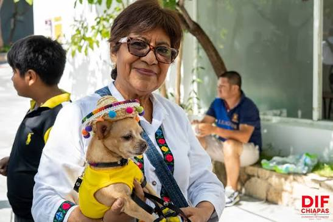

Presentación del Proyecto PAEC

Huellitas Comunitarias es una iniciativa nacida en el marco del Programa Abierto de Extensión Comunitaria (PAEC). Nuestro propósito es estructurar una red de apoyo para los animales en situación de abandono dentro de nuestra localidad.